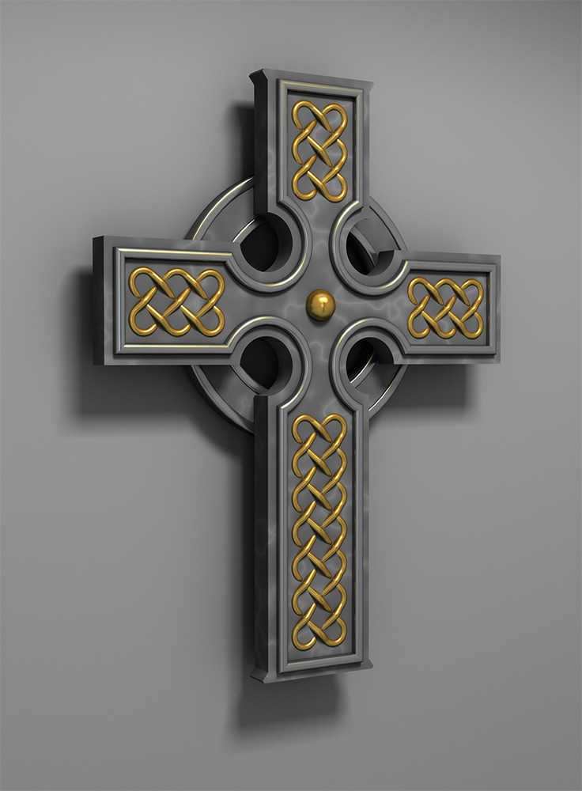

Celtic Cross (2015)
The Celtic cross continues to intrigue me as a striking symbol of our brokenness. At once, the cross declares that our true home is elsewhere, while the sun-circle shows our unwillingness to let go of this world. It is a reminder to me of God's mercy as I seek him, keeping me focused on his greatest gift while graciously letting me indulge in its beauty. The model for this image was designed using Blender and rendered with Yafaray. It was inspired by an image of a wall plaque that I found for sale from pacifictradingonline.com.
© W. Rhett Davis 2015